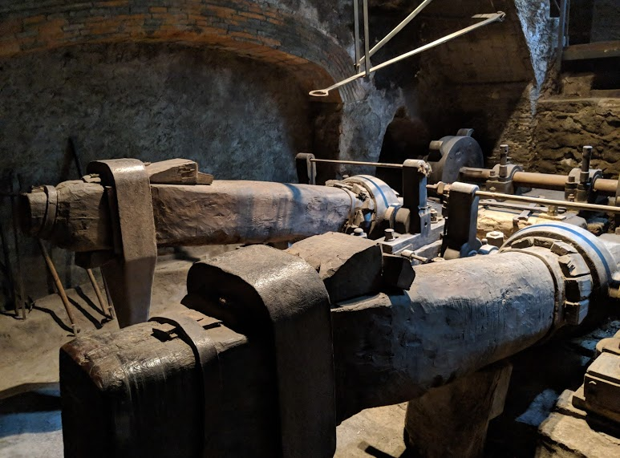
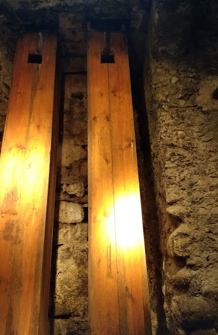
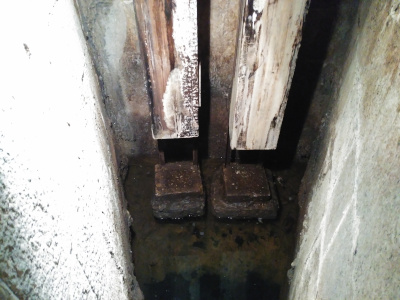
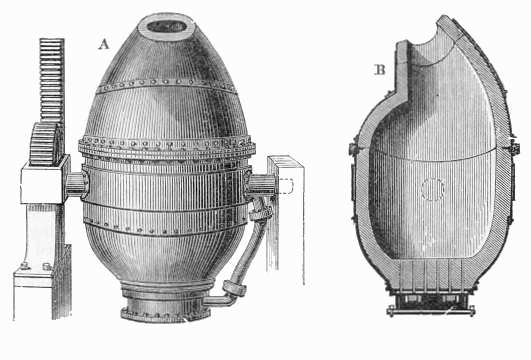

Ferro, acer i fosa#
Pàgina en desenvolupament
Encara estem treballant en aquest document.
Esperem oferir-vos properament el seu contingut.
Disculpeu les molèsties.
Si recordem els procés de nucleosíntesis als estels, no ens ha d’estranyar que el trobem en un 5% a l’escorça terrestre.
La seva abundància, procés d’obtenció, tenacitat, mal·leabilitat i ferromagnetisme a temperatura ambient, expliquen el seu ús quotidià, especialment dels seus aliatges, els acers i les foses.
Formes al·lotròpiques del ferro
Fase |
Temperatura |
Xarxa |
Magnetisme |
|---|---|---|---|
α |
T < 788 °C |
BCC |
ferromagnètic |
α\(^1\) |
788 °C – 910 °C |
BCC |
paramagnètic |
γ |
910 °C – 1400 °C |
FCC |
paramagnètic |
δ |
1400 °C – 1539 °C |
BCC |
paramagnètic |
\(^1\) Abans la fase α del ferro per sobre dels 788 °C, temperatura en que el ferro passa de ser ferromagnètic a paramagnètic, es denominava fase β. Avui en dia aquest nom és obsolet, ja que no hi ha canvis estructurals a la xarxa.
Propietats del ferro
Densitat: 7,874 g/cm3
Punt de fusió: 1538 °C
λ : 80,4 W/m·°C
α : 11,8·10-6 °C-1
ρ: 96,10·10-3 μΩ·m
E: 110 GPa
σ\(_E\) : 130 MPa
R\(_M\) : 260 MPa
ε : 45 %
Duresa : 490 HB
Recordem que els acers tenen menys d’un 2,1 % de C, per sobre tenim les foses, fins a un 6,67 % de C. Així com els acers es poden conformar per forja, les foses només per emmotllament.
La forja consisteix en donar forma a l’acer escalfat colpejant amb el martell, normalment sobre una enclusa. En calent l’acer és més plàstic.

Del diagrama Fe-C podem observar que les foses tenen un punt de fusió (>1130 °C) inferior al dels acers (>1400 °C).
Les foses presenten molta resistència als esforços de compressió, però no a tracció i xoc.
En canvi l’acer suporta molt bé tot tipus d’esforç. A més a més, podem canviar les propietats de l’acer mitjançant tractaments tèrmics. Per exemple, en el procés de la forja és habitual refredar ràpidament les peces d’acer en un cossi amb aigua, per trempar-les. Com veurem més endavant, el tremp millora la duresa de l’acer, a costa d’incrementar també la fragilitat.
És molt freqüent afegir a l’acer altres elements a banda del carboni. Per exemple, l’acer inoxidable 18-10 utilitzat en la majoria de coberteries porta un 18 % de Cr i un 10 % de Ni. Per la fabricació d’eines s’afegeix vanadi per incrementar la duresa i resistència a la tracció a alicates i tornavisos o tungstè (acers ràpids) per suportar les altes temperatures a broques i freses.
Al llarg de la història diverses vegades les propietats d’un acer concret s’han obtingut per casualitat, bé per la forma d’obtenir-lo o de conformar-lo. És el cas del ferro bo, que es produïa a les fargues del nostre país i que va aconseguir fama mundial. Avui en dia trobem armes fetes a Ripoll a museus de tot el món.
La utilització de carbó vegetal, amb molt poc sofre, a la farga catalana, procés utilitzat a l’edat mitjana i millorat al segle XVII, donaven a l’acer, baix en carboni i fòsfor, una qualitat inigualable a aquella època.
Un altre cas són els acers de Damasc, emprats a l’Orient Mitjà en espases des del 1100 aC fins al 1700. La tècnica es va perdre fa segles, però sembla que recentment s’ha recuperat el know‑how. Aquestes llegendàries espases són conegudes per la seva duresa i tall etern. Diferents teories s’han proposat per explicar les seves propietats, la darrera d’elles especula sobre la formació de nanotubs de carboni a la seva estructura.
La farga catalana#
Aquesta va ser utilitzada des de l’edat mitjana. L’aigua tenia un paper important: per una banda, com a font d’energia, per moure els martinets amb una roda hidràulica. Però al segle XVII es va introduir una notable millora: també s’utilitzava per incrementar el flux d’aire, i per tant d’oxigen, al forn, gràcies a unes trompes que, per efecte Venturi, aconseguien una gran pressió d’aire a la caixa dels vents, que es regulava i dirigia cap al forn, on la mena de ferro (minerals amb alt contingut d’òxid de ferro) s’apilava en capes alternades amb capes de carbó vegetal. Gràcies a les trompes el forn arribava a temperatures de 1000 °C.
Martinets de la Farga Palau (Ripoll). Una roda hidràulica transmet el moviment a unes lleves que fan pujar i deixen caure de cop els martinets, utilitzats per fracturar la mena i per forjar el metall. Font: Alejo Pineda |
Trompes a la Farga Palau (Ripoll). Font: Moisés Sánchez. |
Caixa dels vents a la Farga Palau (Ripoll). Font: Adrià Rocamora, |
|---|---|---|
 |
 |
 |
Els minerals de ferro emprats son òxids, la mena més abundant. El carboni és la clau per reduir, es a dir, eliminar l’oxigen del ferro. Això s’aconsegueix amb l’alta temperatura del forn i el flux incrementat d’oxigen. Es produirà CO2 per dues reaccions: per una banda per la crema del calor vegetal amb l’oxigen de l’aire, per l’altra banda per la reducció dels òxids de ferro. Una part del carboni es dissoldrà amb el ferro, obtenint un acer homogeni d’alta qualitat, el ferro bo.
Amb els martinets es picava el masser obtingut: un bloc incandescent bàsicament de ferro. Amb els cops dels martinets es separava l’escòria de la massa esponjosa de ferro, a la vegada que se li donava forma.
Si bé els alts forns obtenen ferro colat a un preu inferior que l’acer de la farga catalana, no van aconseguir reemplaçar-la fins l’aparició dels convertidor Bessemer al segle XIX.
Show code cell source
from IPython.display import YouTubeVideo
YouTubeVideo('hfKm3WFNkpQ')
Alts forns i el convertidor Bessemer#
Actualment el ferro s’obté en forma de ferro colat (fosa) als alts forns, i necessita d’un tractament posterior si el que volem és obtenir acer. A l’alt forn s’introdueixen per la part superior la mena amb el carbó de coc, que té baix contingut en sofre, i pedra calcària, CaCO3. La crema del coc allibera calor i CO, que redueix la mena. La pedra calcària permet la separació del SiO2 present a la mena, ja que l’escòria amb el CaSiO3 sura sobre el ferro colat i és eliminada. El ferro colat resultant té una composició d’un 92 % Fe, d’un 3 a 4 % C , 0,5‑2,5 % Mn i 0,04-2 % P.
|
Diagrama alt forn |

Aquesta fosa produïda a l’alt forn es pot utilitzar directament o convertir-la en acer. El primer procés rendible de conversió en acer de la fosa va ser el convertidor Bessemer (1855): un recipient amb parets refractàries amb una única obertura superior i un mecanisme que permet inclinar-lo per la descàrrega. A la part inferior té uns orificis per injectar aire a l’interior. Una vegada carregat amb el ferro colat a alta temperatura l’oxigen present a l’aire injectat provoca la descarburació de la fosa i la seva conversió en acer.

Tractaments tèrmics de l’acer#
Ja hem vist al diagrama Fe-C que per altes temperatures (T > AC\(_3\)) els acers agafen l’estructura austenita amb el carboni ocupant espais intersticials a la xarxa FCC i a temperatures baixes (T < AC\(_1\)) aquest carboni el trobem en forma de Fe\(_3\)C (perlita, cementita) a una xarxa BCC de ferrita.
El tremp és un tractament tèrmic típic de l’acer on es supera AC3 i es deixa un temps per estabilitzar l’austenita, amb un ràpid refredament posterior per sota d’AC1 que impedeix la difusió del carboni de forma que l’austenita es transforma en martensita, una xarxa tetragonal centrada al cos supersaturada de carboni.


L’acer trempat així obtingut té una duresa (i fragilitat) superior a l’acer perlític que típicament correspon a la mateixa temperatura i composició. Com el tremp origina altes tensions a la xarxa, típicament s’aplica després un tractament de reveniment: s’escalfa l’acer per sota d’AC1 i es deixa refredar lentament per eliminar defectes a la xarxa, incrementa la tenacitat sense perdre duresa.
Un altre tractament típic és la recuita: s’escalfa l’acer per sobre d’AC\(_3\) i es deixa refredar lentament, incrementant l’elasticitat i facilitant el mecanitzat de l’acer perlític. Aquest tractament no és exclusiu dels acers.
Enduriment diferencial.#
Una katana mostra una línia ondulada brillant (nioi) que separa el tall martensític de la zona perlítica. El nucli de la katana és de ferro gairebé pur: no és dur, però tampoc és fràgil. D’aquesta forma s’aconsegueixen les propietats desitjades a cadascuna de les zones de la katana